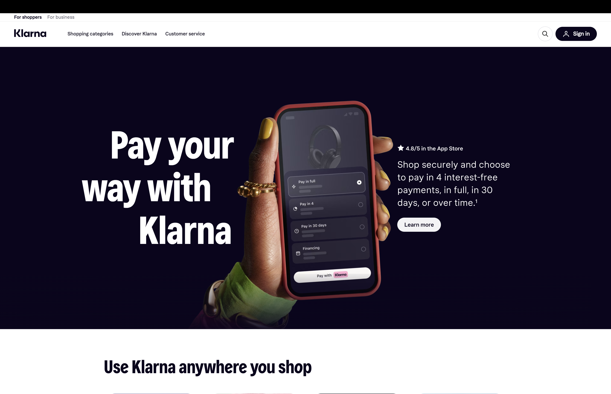
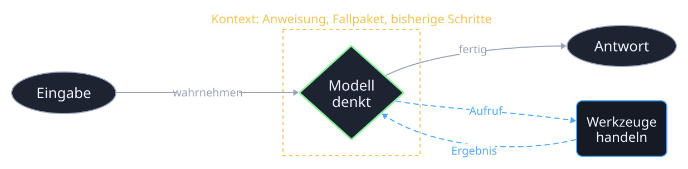
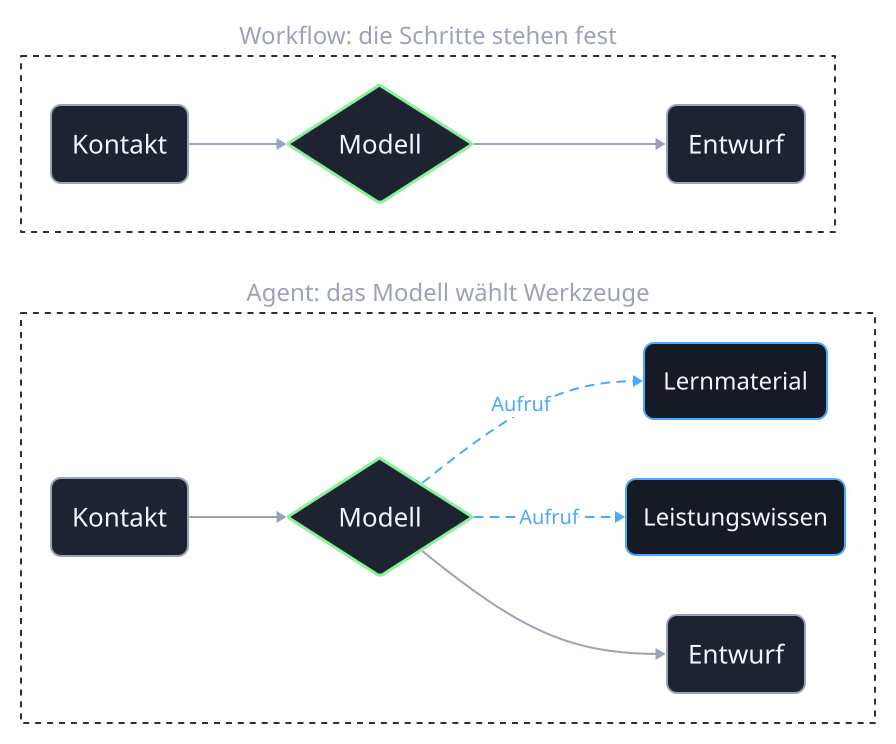

Anfragen
Zwei Drittel
der Kundenanfragen bearbeitet der Assistent im ersten Monat selbst.
Zeit
Minuten statt Stunden
Die Lösungszeit sinkt von etwa elf Minuten auf unter zwei.
Grenze
Mensch bleibt
Unklare und heikle Fälle gehen an Mitarbeitende, der Assistent übergibt.
1
Ziel
Ein Auftrag, der mehr als einen Schritt braucht. Beispiel: Für einen Webinar-Kontakt den passenden nächsten Schritt finden.
2
Wahrnehmen
Eingaben lesen: Kontaktfelder, Anliegen, Regeln aus dem Fallpaket.
3
Denken
Das Modell ordnet ein und plant: Material, Rückfrage oder Gespräch, und was dafür fehlt.
4
Handeln
Werkzeuge nutzen: nachschlagen, lesen, schreiben. Ergebnis prüfen und bei Bedarf einen weiteren Schritt gehen.

Der gelbe Rahmen ist der Kontext: alles, was das Modell in diesem Moment sieht. Werkzeuge liefern neue Informationen hinein, deshalb kann der Agent mehr als eine einzelne Anfrage.
Baustein 1
Modell
Versteht Sprache, ordnet ein, formuliert. In n8n der Knoten „Kursmodell“ mit Gemini.
Baustein 2
Werkzeuge
Alles, was das Modell aufrufen darf: eine Tabelle lesen, eine Wissensquelle befragen, eine Berechnung. Kein Werkzeug, kein Handeln.
Baustein 3
Kontext
Was das Modell sieht: Anweisung, Fallpaket, der aktuelle Kontakt, Ergebnisse der Werkzeuge. Der Kontext entscheidet über die Qualität mehr als das Modell.
Was im Prompt steckt
Warum das zählt
Stufe 1
Chat
Eine Frage, eine Antwort. Jedes Mal neu, nichts wiederverwendbar.
Stufe 2
Anweisung
Regeln und Wissen als Text gespeichert, pro Fall eingefügt. Gleiche Qualität bei jedem Lauf.
Stufe 3
Workflow
Der Ablauf steht fest. Das Modell übernimmt einzelne Schritte, entscheidet aber nicht über den Ablauf. Hier steht der Kurs.
Stufe 4
Agent
Das Modell wählt innerhalb gesetzter Grenzen Werkzeuge und nächste Schritte selbst.

Gleiche Eingabe, gleicher Weg: Der Workflow ist prüfbar, indem man ihn nachvollzieht. Der Agent ist prüfbar nur über das Laufprotokoll: Welches Werkzeug hat er wann aufgerufen, und hat es die Antwort verbessert?
Prinzip 1
Einfachste Lösung zuerst
Ein Agent kommt erst, wenn der feste Ablauf nachweislich nicht reicht. Mehr Autonomie heißt mehr Kosten, mehr Latenz, mehr Fehlerquellen.
Prinzip 2
Jeden Schritt sichtbar machen
Was das Modell plant und welches Werkzeug es ruft, steht im Protokoll. Ohne das lässt sich ein Agent weder prüfen noch verbessern.
Prinzip 3
Werkzeuge wie für einen neuen Kollegen beschreiben
Name, Zweck, was hinein- und herauskommt, wann es nicht zu benutzen ist. Die meisten Agentenfehler sind schlecht beschriebene Werkzeuge.
| Muster | Was passiert | In n8n |
|---|---|---|
| Kette | Schritte nacheinander, jeder verfeinert das Ergebnis | mehrere Chain-Knoten hintereinander |
| Verzweigung | Ein Klassifizierer entscheidet, welcher Weg folgt | Modell plus If oder Switch |
| Parallel | Mehrere Prüfer gleichzeitig, dann ein Urteil | Verzweigung, dann Merge |
| Schleife mit Prüfer | Entwurf, Bewertung, Überarbeitung, bis es reicht | zwei Chains plus If mit Rückkante |
| Agent | Das Modell wählt Werkzeuge selbst | AI-Agent-Knoten mit Tool-Anschlüssen |
Alle fünf sind im Kurs „KI-Agenten in n8n“ mit Beispielen hinterlegt. Für das Zoi-Projekt braucht es meist Kette und Verzweigung, der Agent kommt dort hin, wo Wissensquellen je nach Anliegen wechseln.
Was der Agent tut
Was beim Menschen bleibt
Ein Agent, der alles selbst entscheidet, ist im Marketing kein Ziel. Ein Agent, der gut vorbereitet und sauber übergibt, spart die Zeit, die zählt.
Zurück zur Kursseite: Dienstag · Agentic AI für Growth Marketing | Blocktag 2